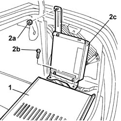
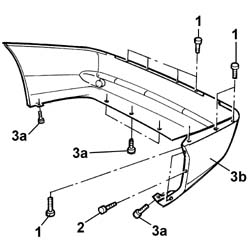

7210E66 REAR BUMPER - R.R.
- Path
- Procedures > 72 panels and frames > 7210 REMOVING REFITTING > 7210E EXTERNAL PARTS > 7210E66 REAR BUMPER - R.R.
- Kind
- repair procedure (removal / refitting; the operation number is the code)
- Applies to
- all engines; all production periods
- Interactive page
- https://sloeber94.github.io/elrnDB-lThss/en/#/501195
Applies to: all engines; all production periods
Applies to: all engines; all production periods
 Removing
Removing
 Refitting
Refitting- Position the vehicle on a lift.
See in Op. 7040B10 LOAD CARRYING COMPARTMENT LINING - R.R.
See in Op. 7040B12 Luggage compartment/load platform left SIDE LINING - R.R.
- Release the luggage compartment seal as necessary.
1. Lower the luggage compartment trim flap.
2. Undo the nut (2a) and the bolts (2b) and place the TV tuner control unit (2c) at the side.

Applies to: all engines; all production periods
1. Undo the upper retaining bolts.
2. Undo the side fixing bolts on both sides.
- Raise the lift.
3. Undo the lower bolts (3a) and remove the rear bumper (3b).

Applies to: all engines; all production periods
Refitting
Removing- Check that the bumper is not damaged.
- If necessary, retouch the paintwork.
- Position the rear bumper and tighten the lower fixing bolts.
- Lower the lift.
- Tighten the upper and side fixing bolts.
See in Op. 7040B12 Luggage compartment/load platform left SIDE LINING - R.R.
See in Op. 7040B10 LOAD CARRYING COMPARTMENT LINING - R.R.
- Remove the vehicle from the lift.